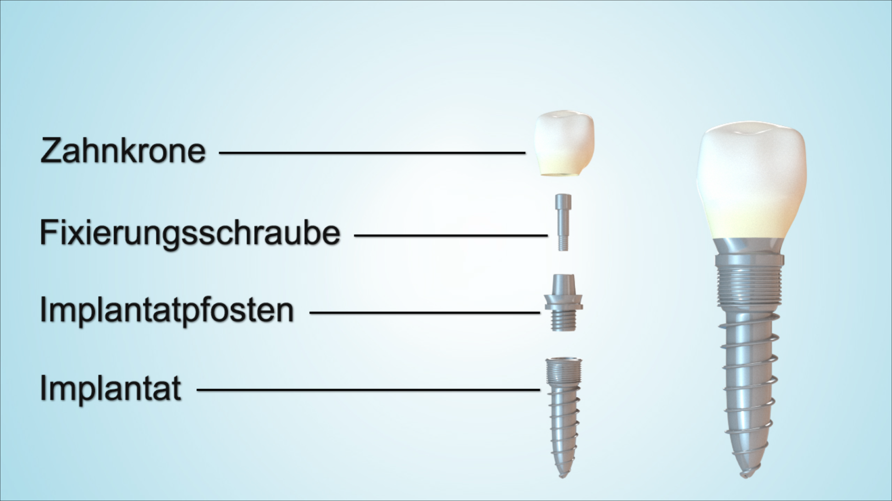

Ein Zahnimplantat ist eine künstliche Zahnwurzel. Meist handelt es sich um eine kleine Schraube aus Titan, seltener aus Keramik. Sie wird in den Kieferknochen eingesetzt und heilt dort fest ein.
Größe: Implantate sind deutlich kleiner, als viele Patienten erwarten. Häufig liegen sie in einer Größenordnung von ca. 4 mm Durchmesser und etwa 8-10 mm Länge; die genaue Größe richtet sich nach Knochenangebot, Position und geplanter Versorgung.
Aufbau: Ein modernes Implantat ist häufig zweiteilig. Der Implantatkörper hat außen ein Gewinde für den Halt im Knochen und innen ein Gewinde, in dem später ein prothetisches Aufbauteil verschraubt wird.
Sichtbarer Zahn: Das Implantat selbst ist nicht die Krone. Es ist das Fundament im Knochen. Die sichtbare Versorgung - Krone, Brücke oder Prothese - wird darauf befestigt.
Zusammenarbeit: Wir planen die Implantatposition chirurgisch präzise und stimmen sie mit Ihrer Hauszahnarztpraxis ab. Aufbau, Krone, Brücke oder Prothese erfolgen anschließend prothetisch in der Hauszahnarztpraxis.

Ein einzelnes Implantat kann eine einzelne Krone tragen. Der wichtigste Vorteil gegenüber einer klassischen Brücke ist, dass gesunde Nachbarzähne dafür nicht beschliffen werden müssen. Außerdem wird die Kaukräfteinleitung wieder näher an einer natürlichen Zahnwurzel nachgebildet.
Mehrere Implantate können gemeinsam eine Brücke tragen. So lassen sich auch größere Lücken festsitzend versorgen, ohne jeden fehlenden Zahn einzeln ersetzen zu müssen.
Implantate können eine herausnehmbare oder festsitzende Prothese stabilisieren - bis hin zur Versorgung eines ganzen Ober- oder Unterkiefers. Das kann Halt, Kaukraft und Sicherheit beim Sprechen oder Essen deutlich verbessern.
Wenn sich die Zahnsituation später verändert, kann ein stabiles Implantat häufig weiter genutzt werden, zum Beispiel als Brückenpfeiler oder Ankerpunkt für eine Prothese. Zusammen mit natürlichen Zähnen kann es zusätzliche Stützpunkte schaffen.
Viele Implantate funktionieren sehr lange. In großen Übersichtsarbeiten sind nach 10 Jahren häufig noch etwa 93-96 % der Implantate in Funktion. Das ist aber keine lebenslange Garantie: Pflege, Knochen, Zahnfleisch, Belastung, Rauchen, Parodontitis und regelmäßiger Recall beeinflussen die Prognose.
Eine einfache Implantation ohne Knochenaufbau kann häufig in ca. 20-30 Minuten Behandlungszeit durchgeführt werden. Mehrere Implantate, Knochenaufbau, Sinuslift oder schwierige anatomische Situationen verlängern den Termin. Die genaue Dauer besprechen wir nach Planung und Bildgebung.
Eine echte Abstoßung wie bei einer Organtransplantation ist nicht die typische Erklärung. Ein Implantat ist kein transplantiertes Organ. Probleme entstehen eher durch fehlende Einheilung, Entzündung, Überlastung, zu wenig Knochen oder ungünstige Pflegefähigkeit. Materialunverträglichkeiten sind möglich, aber selten.
Geeignet ist ein Implantat, wenn Knochenangebot, Allgemeingesundheit, Mundhygiene und prothetisches Ziel zusammenpassen. Das Alter allein ist meist nicht entscheidend: Auch sehr alte Patienten können bei passender gesundheitlicher Situation erfolgreich implantologisch versorgt werden. Besonders sorgfältig prüfen wir Rauchen, Diabetes, Parodontitis, Blutverdünner, Bisphosphonate/Denosumab, Immunsuppression und frühere Implantatverluste.
Nein, nicht automatisch. Entscheidend sind Allgemeinzustand, Medikamente, Knochenangebot, Pflegefähigkeit und das konkrete Ziel der Versorgung. Wir haben auch Patienten über 90 Jahre bei guter gesundheitlicher Ausgangslage erfolgreich mit Implantaten versorgt.
Meist nicht. Viele Implantationen führen wir in lokaler Betäubung durch. Für mehr Komfort können je nach Fall orale Sedierung, i.v.-Sedierung/Dämmerschlaf oder Vollnarkose besprochen werden; eine Narkose ist für eine einfache Implantation aber nicht automatisch notwendig.
Möglich sind Nachblutung, Schwellung, Wundheilungsstörung, Infektion, fehlende Einheilung, Verletzung von Nachbarstrukturen, Entzündungen um das Implantat oder spätere technische Probleme an Schraube, Aufbau, Krone oder Prothese.
Der eigene gesunde Zahn ist die beste Lösung. Wenn ein Zahn fehlt, ist ein Implantat häufig die zahnschonendste feste Versorgung, weil Nachbarzähne nicht beschliffen werden müssen. Eine Brücke kann trotzdem sinnvoll sein, wenn Nachbarzähne ohnehin stark gefüllt oder überkronungsbedürftig sind.
Abheilung und Unterlagen sammeln; längere Wartezeit ist unproblematisch.
Zielzahnposition, Implantatposition und ggf. Knochenbedarf werden abgestimmt.
Implantation, falls passend mit kleinem Knochenaufbau; das Implantat heilt unsichtbar ein.
Nach Einheilung Freilegung/Freigabe; danach ca. 4 Wochen Weichgewebeheilung.
Abdruck/Scan und Versorgung mit Aufbau, Krone, Brücke oder Prothese.
Der Prothetiker plant und versorgt die spätere Prothetik; wir übernehmen die chirurgischen und parodontologisch-chirurgischen Maßnahmen. Dadurch arbeitet jeder Spezialist in seinem Kernbereich.
Wir empfehlen in den ersten Jahren regelmäßige Implantat-Recall-Termine, damit Knochen, Zahnfleisch, Pflegefähigkeit und Belastung frühzeitig kontrolliert werden.
Implantologische Leistungen werden von der gesetzlichen Krankenkasse nicht übernommen. Bei der prothetischen Versorgung beteiligt sich die Krankenkasse je nach Befund und Bonusheft teilweise; ein privater Eigenanteil bleibt in der Regel bestehen.
Wenn Breite oder Höhe nicht reichen, kann die Behandlung vom normalen Ablauf abweichen. Manchmal ist ein eigenständiger knochenaufbauender Schritt vor der Implantation notwendig; die Behandlung dauert dann voraussichtlich etwa 4 Monate länger. Kleinere Defekte können häufig gleichzeitig mit der Implantation aufgebaut werden.
Wenn die Kieferhöhle tief liegt, wird ein interner oder externer Sinuslift geprüft. Dabei wird der Kieferhöhlenboden vorsichtig angehoben.
Ein Sofortimplantat ist nur möglich, wenn nach der Zahnentfernung Knochenwand, Entzündungssituation und Primärstabilität sicher passen.
Bei vollständig zahnlosem Ober- oder Unterkiefer geht es nicht um eine Einzelzahnlücke, sondern um ein prothetisches Gesamtkonzept.